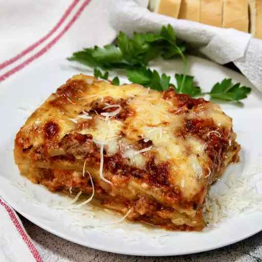

Classic Lasagna Recipe

Description
Prepare this easy homemade lasagne ahead of time and save in the freezer, uncooked, for when you need it during a busy week. Just bake for an extra 45 mins
Ingredients
- 500g Quorn Mince
- 750g Passata
- 300g Fresh Lasagna Sheets
- 1 Jar White Sauce
- Lots of Cheese
Steps
- Cook the mince
- Pour over the passata and season
- Simmer for 20 minutes
- In a baking dish, layer the mince, lasagna sheets and white sauce (in that order)
- Repeat until you run out of ingredients
- Cover with tasty cheese
- Bake for 40 minutes
- Eat tasty lasagna